One-sided power:
/math-116dc12ecdfa85ea88e65c1da22bd8cf.png "H_0:\frac{{\sigma }_{1}}{\sigma_2}\le 1")
Contents |
Let 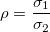
One-sided power: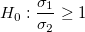
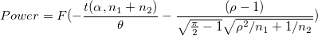
One-sided power:
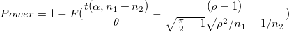
Two-sided power 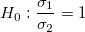
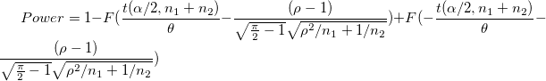
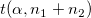:upper percentile of the t distribution with n1+n2-2 degrees of freedom
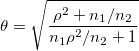
F:the cumulative distribution function of the standard normal distribution
Let
One-sided power:
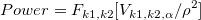
One-sided power:
![Power=1-F_{k1,k2}[V_{k1,k2,1-\alpha }/\rho ^2]\!](../images/Algorithms(PSS_Two_Variances_Test)/math-1b550a3a3bdb9cb83ddc7a8b7d8c01f3.png "Power=1-F_{k1,k2}[V_{k1,k2,1-\alpha }/\rho ^2]\!")
Two-sided power 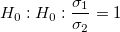
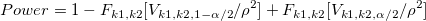
/math-9ce810c63bc5a8383948eb4ebf1a96f9.png "F_{k1,k2}\!") :distribution function of the F distribution with k1 and k2 degrees of freedom; k1 and k2 = n -1
:distribution function of the F distribution with k1 and k2 degrees of freedom; k1 and k2 = n -1
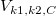:inverse CDF evaluated at C for a F distribution with k1 and k2 degrees of freedom
/math-adf426d5254dc8146568832bc46cbc29.png "\alpha\!") :significance level
:significance level
Origin uses an iterative algorithm with the power equation. At each iteration,the power for a trial sample size are evaluated and iteration stops when the power evaluated reaches the values which corresponding to an integer sample size, and which is nearest to, yet greater than, the target value.